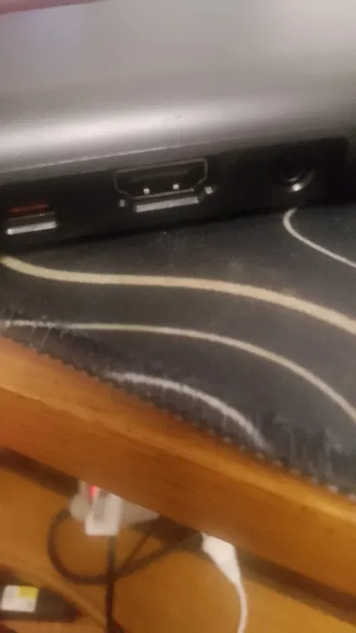

Murmulator — це сучасний спосіб отримати повноцінний ZX Spectrum без жодної пайки та складних налаштувань.
Це емулятор, який відтворює роботу Spectrum і виводить зображення прямо через HDMI. Просто підключіть до телевізора або монітора — і ви вже в 80-х.
Живлення здійснюється через USB Type-C, а програми запускаються з SD-карти — більше ніяких касет, шуму та довгого завантаження.
Підтримується підключення USB-клавіатури або джойстика, що робить пристрій максимально зручним для сучасного використання.
Це ідеальний варіант для тих, хто хоче:
• швидко почати грати
• показати Spectrum на сучасному ТВ
• не заморочуватись із залізом
Увімкнув — і працює.
